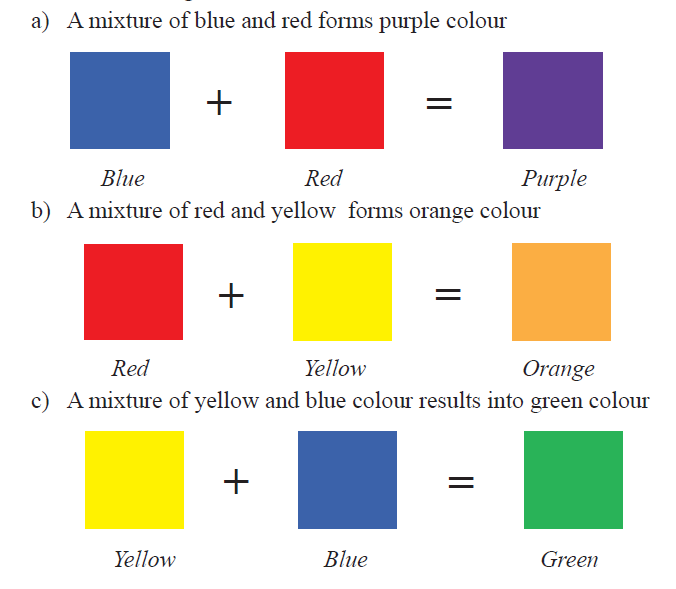
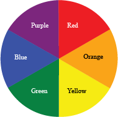

Secondary colours are normally arranged in between the primary colours in a colour wheel. This arrangement illustrates primarily that when two primary colours are mixed they normally form a secondary colour. Figure 3.6 shows a colour wheel of primary and secondary colours.
